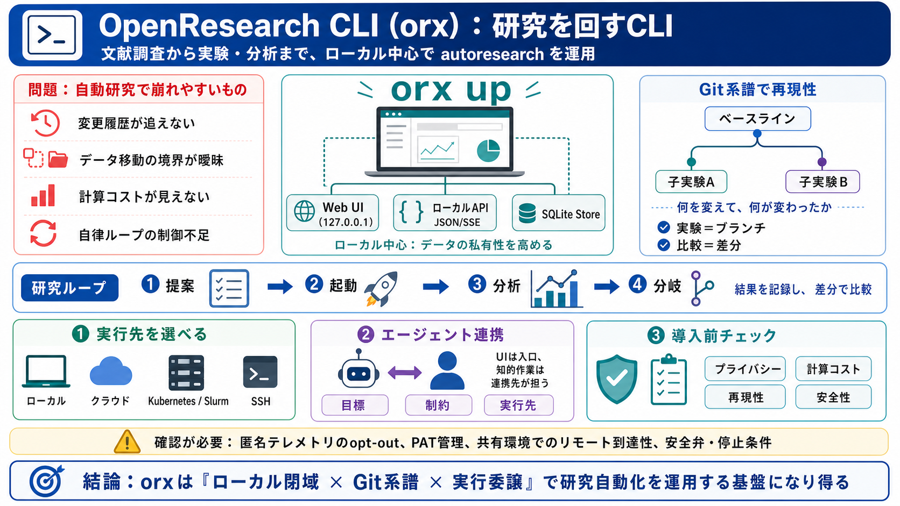

GitHub - alphaXiv/openresearch-cli: Run parallel research agents with any model · GitHub
To hack on the dashboard UI itself (Vite + React, embedded into the binary at build time): ``` cd && && ``` Run the te…

研究を回すCLI
OpenResearch CLI（orx）は、文献調査から実験・分析までの autoresearch ループを、 ローカル中心で運用しながら、複数エージェントと計算基盤を束ねる研究自動化CLI＋ダッシュボードです。（研究自動化：autoresearch / 自律研究）
なぜ難しい？
生成AIの研究自動化は、変更履歴が追えない・計算コストが見えない・安全性の境界が曖昧になりがちです。 orxはそれを「系譜（lineage）」「ローカル閉域」「実行委譲」で抑えにいきます。
研究の系譜
実験は gitブランチ として表され、子はベースラインに対する差分として測定されます。 これで「何を変えて、何が変わったか」を後から検証できます。（系譜管理：lineage / 因果の追跡）
i 研究の「履歴」をコードと同じ粒度で残す
ii 比較（ベースライン vs 対象）を前提化する
ローカル核
orx up で 127.0.0.1 上にWeb UIとローカルAPI（JSON/SSE）が起動し、 ローカルSQLiteストアを前提に動く、と説明されています。
i ブラウザで進行・差分・ログ・成果物を可視化
ii ローカル中心で「データの私有性」を高める設計思想
研究ループ
エージェント連携により、目標を与えると 提案→起動→分析 を進める導線が用意されています。 例として /reproduce-paper や /paper-to-marimo が挙げられています。
スケール手段
実行はローカルに限定されず、 Modal、Hugging Face Jobs、Kubernetes、 Slurm、任意SSHなどに委譲できる、と説明されています。
i ローカルダッシュボードで進行を監視
ii 計算は外部資源へ（ユーザ指定）
統合の仕方
Claude Code / Codex / OpenCodeなどの実行基盤と統合し、目標からループを回すことを目指しています。 つまりUIは“入口”、実際の知的作業は連携先が担う構図です。
i 手作業の手順を減らす
ii ただし安全弁は追加資料で確認が必要
認証と境界
orx login は個人用アクセストークン（PAT）を発行し、Bearerで各リクエストに付与するとあります。 文献検索はログイン不要と読み取れる一方、機能によっては認証が必要になり得ます。
i どの機能が必須か：ドキュメントで機能別に確認
ii PATの扱い：組織内ポリシー（保存・共有）を要検討
リモートの注意
orx up --remote はSSHトンネルでポートを戻しブラウザを開く一方、 リモート側ではループバック上で認証なしで到達可能になる可能性が示唆されています。 共有環境では他ユーザアクセスのリスクを考慮してください。
i 共有クラスタ/共有VMでは権限とネットワークを確認
ii 「localhost制限」でも到達条件は運用次第
テレメトリ
テレメトリは匿名・オプトアウト（opt-out）で、送るのは粗いイベントラベルなどの概略情報とされています。 コード/プロンプト/ファイル内容やパス、プロジェクトIDなどの“識別”要素は収集しない主張です。
i 「opt-outの実効性」を確認
ii ネットワーク遮断時の挙動も要検討（誤解の回避）
導入判断の観点
orxの価値は明確ですが、導入前に「プライバシー」「計算コスト」「再現性」「安全性」を追加資料で検証するのが安全です。
要点だけ
orxは「ローカル閉域（UI/API/SQLite）」「Git系譜（ブランチで差分比較）」「並列実行（計算基盤選択）」を組み合わせ、 エージェント統合でautoresearchを回す“研究運用基盤”になり得ます。（研究自動化 / 自律ループ）
最後に：匿名テレメトリやリモート到達性など、セキュリティ境界は“運用での確認”が前提です。
To hack on the dashboard UI itself (Vite + React, embedded into the binary at build time): ``` cd && && ``` Run the te…
23 Jul 2026 Hongxin ZhangHongxin Zhang Chunru LinChunru Lin Junyan LiJunyan Li [...] Paper thumbnail 167 Expanding …
BlogSend Feedback? PaperBlogAutoresearch # OvisOCR2 Technical Report # Run Autoresearch Autoresearch turns this pape…
OpenResearch BaselineDone Reproduce the paper 1 run ExperimentDone Test a longer context window 3 runs Experiment…
logo logo Open Analytics - go to homepage About Services Products Community Blog Jobs Contact us Architect Lea…